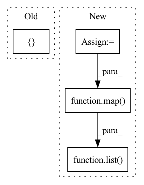

Pattern ID :2290
Before Change
def forward(self, labels: Union[str, Sequence[str]]) -> torch.FloatTensor:
Encode labels via the provided model and tokenizer.
if isinstance(labels, str):
labels = [ labelsAfter Change
def forward(self, labels: Union[str, Sequence[str]]) -> torch.FloatTensor:
Encode labels via the provided model and tokenizer.
labels = upgrade_to_sequence(labels)
labels = list( map( str, labels))
return self.model(
**self.tokenizer(
labels,
return_tensors="pt",In pattern: SUPERPATTERN
Frequency: 3
Non-data size: 4
Instances Fragment ID: 7948387
Project Name: pykeen/pykeen
Commit Name: 6e2219176c206f6e3e809e540abedce31c3446db
Time: 2022-05-12
Author: berrendorf@dbs.ifi.lmu.de
File Name: src/pykeen/nn/utils.py
M Class Name: TransformerEncoder
N Class Name: TransformerEncoder
M Method Name: forward(2)
N Method Name: forward(2)
M Parent Class: nn.Module
N Parent Class: nn.Module
M File Name: src/pykeen/nn/utils.py
N File Name: src/pykeen/nn/utils.py
M Start Line: 58
M End Line: 60
N Start Line: 92
N End Line: 93
Before Change
blocks = self.blocks[:1] if len(blocks) == 0 else blocks
f_args, g_args = map(lambda route: kwargs if route else {}, arg_route)
block_kwargs = { "f_args": f_args, "g_args": g_args}
return _ReversibleFunction.apply(x, blocks, block_kwargs)
After Change
def forward(self, x, **kwargs):
blocks = self.blocks
block_args = route_args(self.args_route, kwargs, len(self.blocks))
if self.training and self.layer_dropout > 0:
to_drop = torch.empty(len(self.blocks)).uniform_(0, 1) < self.layer_dropout
blocks = [block for block, drop in zip(self.blocks, to_drop) if not drop]
blocks = self.blocks[:1] if len(blocks) == 0 else blocks
block_args = list( map( lambda x: {"f_args": x[0], "g_args": x[1]}, block_args))
return _ReversibleFunction.apply(x, blocks, block_args)
Fragment ID: 7948386
Project Name: lucidrains/sinkhorn-transformer
Commit Name: c2662a20cb783efd3351936cfabc83131060a2a6
Time: 2020-04-10
Author: lucidrains@gmail.com
File Name: sinkhorn_transformer/reversible.py
M Class Name: ReversibleSequence
N Class Name: ReversibleSequence
M Method Name: forward(2)
N Method Name: forward(3)
M Parent Class: nn.Module
N Parent Class: nn.Module
M File Name: sinkhorn_transformer/reversible.py
N File Name: sinkhorn_transformer/reversible.py
M Start Line: 119
M End Line: 128
N Start Line: 134
N End Line: 141
Before Change
def forward(self, x, arg_route = (True, True), **kwargs):
f_args, g_args = map(lambda route: kwargs if route else {}, arg_route)
block_kwargs = { "f_args": f_args, "g_args": g_args}
return _ReversibleFunction.apply(x, self.blocks, block_kwargs)
After Change
x = torch.cat([x, x], dim=-1)
blocks = self.blocks
args = route_args(self.args_route, kwargs, len(blocks))
args = list( map( lambda x: {"f_args": x[0], "g_args": x[1]}, args))
layers_and_args = list(zip(blocks, args))
if self.training and self.layer_dropout > 0: Fragment ID: 7948389
Project Name: lucidrains/linear-attention-transformer
Commit Name: fa23ce09a98a63d26116e3935ad5902cf705255d
Time: 2020-06-04
Author: lucidrains@gmail.com
File Name: linear_attention_transformer/reversible.py
M Class Name: ReversibleSequence
N Class Name: ReversibleSequence
M Method Name: forward(2)
N Method Name: forward(3)
M Parent Class: nn.Module
N Parent Class: nn.Module
M File Name: linear_attention_transformer/reversible.py
N File Name: linear_attention_transformer/reversible.py
M Start Line: 118
M End Line: 121
N Start Line: 161
N End Line: 174